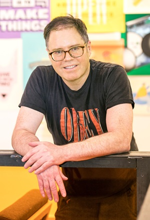
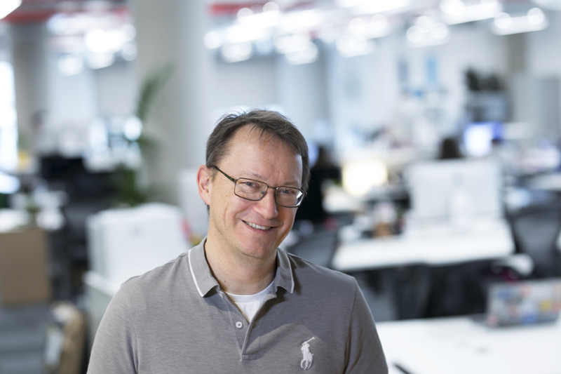

SCAM 2018 will be held in Madrid, Spain co-located with ICSME 2018.
The aim of the International Working Conference on Source Code Analysis & Manipulation (SCAM) is to bring together researchers and practitioners working on theory, techniques and applications which concern analysis and/or manipulation of the source code of computer systems. While much attention in the wider software engineering community is properly directed towards other aspects of systems development and evolution, such as specification, design and requirements engineering, it is the source code that contains the only precise description of the behaviour of the system. The analysis and manipulation of source code thus remains a pressing concern.
For the purpose of clarity ‘source code’ is taken to mean any fully executable description of a software system. It is therefore so-construed as to include machine code, very high level languages and executable graphical representations of systems. The term ‘analysis’ is taken to mean any automated or semi automated procedure which takes source code and yields insight into its meaning. The term ‘manipulation’ is taken to mean any automated or semi-automated procedure which takes and returns source code.
Prof. Mark Harman and Prof. Peter O'Hearn from Facebook, Inc. & University College London will give the following outstanding keynote at SCAM'18:
| Research Papers | Engineering Papers | |
|---|---|---|
| Abstract Deadline | ||
| Paper Deadline | ||
| Notification | ||
| Camera Ready Deadline | ||
Please check back later for updates, and follow us on Twitter to keep informed.
To be finalized...
| 9:00 - 9:15 | Conference Opening | |
| 9:15 - 10:30 | Keynote: From Start-ups to Scale-ups: Opportunities and Open Problems for Static and Dynamic Program Analysis Prof. Mark Harman and Prof. Peter O'Hearn Session Chair: Árpád Beszédes | |
| 10:30 - 11:00 | Break | |
| 11:00 - 12:30 | Session 1: Code Manipulation Session Chair: Chanchal Roy | |
| A Tool for Optimizing Java 8 Stream Software via Automated Refactoring Raffi Khatchadourian, Yiming Tang, Mehdi Bagherzadeh and Syed Ahmed | ||
| Obfuscating Java Programs by Translating Selected Portions of Bytecode to Native Libraries Davide Pizzolotto and Mariano Ceccato | ||
| Combining Obfuscation and Optimizations in the Real World Serge Guelton, Adrien Guinet, Pierrick Brunet, Juan Manuel Martinez, Fabien Dagnat and Nicolas Szlifierski | ||
| Analyzing the Evolution of Preprocessor-Based Variability: A Tale of a Thousand and One Scripts Sandro Schulze and Wolfram Fenske | ||
| 12:30 - 14:00 | Lunch | |
| 14:00 - 15:30 | Session 2: Vulnerabilities, Defects and Smells Session Chair: Sandro Schulze | |
| Enabling the Continuous Analysis of Security Vulnerabilities with VulData7 Matthieu Jimenez, Yves Le Traon and Mike Papadakis | ||
| Periodic Developer Metrics in Software Defect Prediction Seldağ Özcan Kini and Ayşe Tosun | ||
| Which Method-Stereotype Changes are Indicators of Code Smells? Michael J. Decker, Christian D. Newman, Natalia Dragan, Michael L. Collard, Jonathan I. Maletic and Nicholas A. Kraft | ||
| Towards Anticipation of Architectural Smells using Link Prediction Techniques J. Andres Diaz-Pace, Antonela Tommasel and Daniela Godoy | ||
| 15:30 - 16:00 | Break | |
| 16:00 - 17:30 | Session 3: Search and Fact Extraction Session Chair: Davide Spadini | |
| Semantics-Based Code Search Using Input/Output Examples Renhe Jiang, Zhengzhao Chen, Zejun Zhang, Yu Pei, Minxue Pan and Tian Zhang | ||
| Automatic Detection of Sources and Sinks in Arbitrary Java Libraries Darius Sas, Marco Bessi and Francesca Fontana Arcelli | ||
| Detecting Evolutionary Coupling Using Transitive Association Rules Md. Anaytul Islam, Md. Moksedul Islam, Manishankar Mondal, Banani Roy, Chanchal K Roy and Kevin Schneider | ||
| Graal: The Quest for Source Code Knowledge Valerio Cosentino, Santiago Dueñas, Ahmed Zerouali, Gregorio Robles and Jesus M. Gonzalez-Barahona | ||
| The Case for Adaptive Change Recommendation Sydney Pugh, Dave Binkley and Leon Moonen | ||
| 18:00 - | Conference Banquet |
| 9:00 - 10:30 | Session 4: Clones Session Chair: David Shepherd | |
| CroLSim: Cross Language Software Similarity Detector using API documentation Kawser Wazed Nafi, Banani Roy, Chanchal K. Roy and Kevin Schneider | ||
| Built-in Clone Detection in Meta Languages Rainer Koschke, Urs-Björn Schmidt and Bernhard Berger | ||
| Identifying Feature Clones in a Suite of Systems Muslim Chochlov, Michael English, Jim Buckley, Daniel Ilie and Maria Scanlon | ||
| On the Use of Machine Learning Techniques Towards the Design of Cloud Based Automatic Code Clone Validation Tools Golam Mostaeen, Jeffrey Svajlenko, Banani Roy, Chanchal K. Roy and Kevin Schneider | ||
| 10:30 - 11:00 | Break | |
| 11:00 - 12:30 | Session 5: Static analysis Session Chair: Jochen Quante | |
| Challenges of Implementing Cross Translation Unit Analysis in Clang Static Analyzer Gábor Horváth, Péter Szécsi, Zoltán Gera, Daniel Krupp and Norbert Pataki | ||
| Static JavaScript Call Graphs: a Comparative Study Gábor Antal, Péter Hegedűs, Zoltán Tóth, Rudolf Ferenc and Tibor Gyimóthy | ||
| RECKA and RPromF: two Frama-C Plug-ins for Optimizing Registers usage in CUDA, OpenACC and OpenMP Programs Rokiatou Diarra, Alain Merigot and Bastien Vincke | ||
| Untangling Composite Commits Using Program Slicing Ward Muylaert and Coen De Roover | ||
| 12:30 - 14:00 | Lunch | |
| 14:00 - 15:00 | Session 6: Code Classify and Translate Session Chair: Alexander Serebrenik | |
| SCC: Automatic Classification of Code Snippets Kamel Alrashedy, Dhanush Dharmaretnam, Daniel M German, Venkatesh Srinivasan and T. Aaron Gulliver | ||
| An IDE for Easy Programming of Simple Robotics Tasks David Shepherd, Patrick Francis, David Weintrop, Diana Franklin, Boyang Li and Afsoon Afzal | ||
| 15:00 - 15:30 | Session 7: Demos Session Chair: TBA | |
| 15:30 - 16:00 | Break | |
| 16:00 - 17:30 | Session 8: Verification and Error Detection Session Chair: TBA | |
| POI: Skew-Aware Parallel Race Detection Yoshitaka Sakurai, Yoshitaka Arahori and Katsuhiko Gondow | ||
| Automatic Checking of Regular Expressions Eric Larson | ||
| Fine-Grained Model Slicing for Rebel Renate Eilers, Jurriaan Hage, Wishnu Prasetya and Joost Bosman | ||
| 17:30 - 17:45 | Closing Session Chairs: Árpád Beszédes, Mark Hills, Emily Hill | |
| 17:45 - 18:30 | Open Steering Committee Session Chair: Neil Ernst | |
| 18:30 - | Social Event (fraternity activity with VISSOFT) |
To be finalized...
Abstract: This paper describes some of the challenges and opportunities when deploying static and dynamic analysis at scale, drawing on the authors’ experience with the Infer and Sapienz Technologies at Facebook, each of which started life as a research-led start-up that was subsequently deployed at scale, impacting billions of people worldwide.
The paper identifies open problems that have yet to receive significant attention from the scientific community, yet which have potential for profound real world impact, formulating these as research questions that, we believe, are ripe for exploration and that would make excellent topics for research projects.
Bio: Peter O’Hearn is a computer scientist who has made major contributions to the science and engineering of program correctness. His research contains a strand stretching from abstract topics such as mathematical logics through to automated analysis of industrial software used regularly by billions of people. Peter is known particularly for separation logic, a theory he developed with John Reynolds which opened up new possibilities for scaling logical reasoning about code. After over 20 years as an academic, Peter took a position at Facebook in 2013 with the acquisition of a startup he cofounded, Monoidics Ltd. The Infer static analyzer, developed by Peter’s team, has resulted in tens of thousands of issues being fixed by Facebook engineers before they reach production. Infer is also used at Amazon, Spotify, Mozilla and other companies. Peter is a Fellow of the Royal Society (2018), a Fellow of the Royal Academy of Engineering (2016) and is the recipient of a number of awards, including a POPL influential paper award (2011), the Computer Aided Verification Award (2016) and the Gödel Prize (2016).
Bio: Mark Harman is an engineering manager at Facebook London, where he manages a team, working on Search Based Software Engineering (SBSE) at Facebook Scale. He is also a part time professor of Software Engineering in the Department of Computer Science at University College London, where he directed the CREST centre for ten years (2006-2017) and was Head of Software Systems Engineering (2012-2017). He is known for work on source code analysis, software testing, app store analysis and empirical software engineering. He was the co-founder of the field SBSE, which has grown rapidly with over 1,700 scientific publications from authors spread over more than 40 countries. SBSE research and practice is now the primary focus of his current work in both the industrial and scientific communities. In addition to Facebook itself, Mark’s SBSE scientific work is also supported by the ERC and EPSRC funding councils, and his teams at Facebook and at UCL are both now hiring (that is they were at the time of writing, and very likely still are as you read this). The Facebook team is looking for practical software engineers and the UCL team is looking for PhD students to work on research in automatically testing and fixing software.
The 18th IEEE International Working Conference on Source Code Analysis and Manipulation (SCAM 2018) aims to bring together researchers and practitioners working on theory, techniques, and applications that concern analysis and/or manipulation of the source code of software systems. The term "source code" refers to any fully executable description of a software system, such as machine code, (very) high-level languages, and executable graphical representations of systems. The term "analysis" refers to any (semi-)automated procedure that yields insight into source code, while "manipulation" refers to any automated or semi-automated procedure that takes and returns source code. While much attention in the wider software engineering community is directed towards other aspects of systems development and evolution, such as specification, design, and requirements engineering, it is the source code that contains the only precise description of the behavior of a system. Hence, the analysis and manipulation of source code remains a pressing concern for which SCAM 2018 solicits high quality paper submissions.
We welcome submission of papers that describe original and significant work in the field of source code analysis and manipulation. Topics of interest include, but are not limited to:
SCAM explicitly solicits results from any theoretical or technological domain that can be applied to these and similar topics. Submitted papers should describe original, unpublished, and significant work and must not have been previously accepted for publication nor be concurrently submitted for review in another journal, book, conference, or workshop. Papers must not exceed 10 pages including all text, references, appendices and figures and must conform to the IEEE proceedings paper format guidelines and must be clearly marked as a research paper. Templates in Latex and Word are available on IEEE's website. All submissions must be in English.
The papers should be submitted electronically in PDF format via EasyChair. Submission will be reviewed by at least three members of the program committee, judging the paper on its novelty, quality, importance, evaluation, and scientific rigor. If the paper is accepted, at least one author must attend the conference and present the paper.
SCAM 2018 also features an engineering paper track for papers that report on the design and implementation of tools for source code analysis and manipulation.
All accepted papers will appear in the proceedings which will be available through the IEEE Digital Library.
A set of the best papers from SCAM 2018 will be invited to be considered for revision, extension, and publication in a special issue of Journal of Systems and Software.
In addition to the research track (see separate CFP), the 18th IEEE International Working Conference on Source Code Analysis and Manipulation (SCAM 2018) will also feature an Engineering track. This track welcomes six-page papers that report on the design and implementation of tools for source code analysis and manipulation, as well as libraries, infrastructure, and the real world studies enabled by these advances. To be clear, this is not the addition of a new track to SCAM but rather a significant expansion to the scope of the tools track of previous SCAMs.
What artefacts qualify as “engineering track” material?
A successful SCAM engineering track paper should:
Optionally (and encouraged):
Note that the submission length has a limit of six pages, in contrast to the two to four pages of traditional tool demo papers. The expectation is that authors use the space to discuss artefact motivation, design, and use cases in much more detail. For example, a use case would be well illustrated by a demo scenario with screenshots.
Each submission will be reviewed by members of the engineering track program committee. Authors of accepted papers will be required to present their artefacts at the conference. All accepted engineering track papers will be published in the conference proceedings. The key criterion for acceptance is that the paper should (a) follow the above mentioned guidelines and (b) make an original contribution that can benefit practitioners in the field now and/or others designing and building artefacts for source code analysis and manipulation. The artefacts can range from an early research prototype to a polished product ready for deployment. Papers about commercial products are allowed, as long as the guidelines described above are followed.
Videos and other demo material may be taken into account by reviewers as they review the paper. However, such material will not become part of the permanent record of the conference, so the paper should be self contained. In order to preserve the anonymity of the reviewers, such material should be hosted on an anonymous public source (e.g., YouTube), or made available in such a way that the tools chair can download them once and redistribute them to reviewers
All accepted papers will appear in the proceedings which will be published by the IEEE Computer Society Press.
A set of the best papers from SCAM 2018 will be invited to be considered for revision, extension, and publication in a special issue of Journal of Systems and Software.
The submission should be maximum six pages, in IEEE format, submitted via EasyChair. Please use the IEEE templates in preparing your manuscripts:
The International Working Conference on Source Code Analysis & Manipulation (SCAM) is governed by the steering committee following a community ratified steering committee charter (v1.2, adopted in 2012).
Madrid is the capital and largest city of Spain, as well as the capital of the autonomous community of the same name (Comunidad de Madrid). The population of the city is roughly 3.3 million with a metro area population of almost 6.5 million. Madrid is best known for its great cultural and artistic heritage, a good example of which is the El Prado museum (a detailed travel guide can be found here). Madrid also boasts some of the liveliest nightlife in the world.
SCAM 2018 will take place at the main venue, Círculo de Bellas Artes, in room Sala Valle Inclán, on the 5th floor.
Foreign citizens must obtain a Spanish visa before entry into Spain, with the exception of visa-free entry based on relevant agreements or regulations. Please contact ICSME organizers if You need a visa letter.
Coffee breaks will be in the terrace of Fábula, just opposite to the Círculo de Bellas Artes.
Lunch will be served in the Las Bóvedas de Cibeles Restaurant, crossing Alcaláa street.
Dinner will take place in Taberna de Antonio Sánchez, on the Calle del Mesón de Paredes street, just a 15 minute walk away from the main venue.
TBA
| Level | Social Functions | Conference Passes | Logo on Publicity | Gift in the Bag | Banquet Address |
|---|---|---|---|---|---|
| Platinum | 3 | ||||
| Gold | 2 | ||||
| Silver | 1 |
For further information, please contact the general chair, Árpád Beszédes, University of Szeged